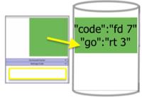

GbCC (Group-based Cloud Computing) applications allow users to enter a room where everyone accesses
their own instance of a particular NetLogo model, or participate in a group NetLogo model.
Everyone can share data, in a gallery space.
The first user who enters the room has the role of teacher.
Any user who enter a room after a teacher has the role of student.
User Event Listeners
When certain events occur, then Reserved Procedures are called.
Models do not require Reserved Procedures.
Teacher Reserved Procedures are only called if the user is a teacher.
User Reserved Procedures are called on any user, (unless
that user is a teacher and there is an existing Teacher Reserved Procedure for that event).
Teacher Enters Room
to gbcc-on-teacher-enter [ teacher-id ] ;; show (word "teacher" teacher-id "entered") end
User Enters Room
to gbcc-on-enter [ user-id ] ;; show (word "user" user-id "entered") end
User Exits Room
to gbcc-on-exit [ user-id ] ;; show (word "user" user-id "exited") end
Share to Gallery
Broadcast View to Gallery
gbcc:broadcast-view "My View"
Broadcast Plot to Gallery
gbcc:broadcast-plot "Plot Number of Turtles"
Broadcast Text to Gallery
gbcc:broadcast-text ":)"
Broadcast Avatar to Gallery
gbcc:broadcast-avatar "star" 45 "my-name""
Clear Broadcasts in Gallery
gbcc:clear-broadcast
Gallery Event Listeners
Select Canvas
to gbcc-on-select [ user-id ] ;; show (word "select canvas from " user-id) end
to gbcc-on-teacher-select [ teacher-id ] ;; show (word "select canvas from " teacher-id) end
Deselect Canvas
to gbcc-on-deselect [ user-id ] ;; show (word "deselect canvas from " user-id) end
to gbcc-on-teacher-deselect [ teacher-id ] ;; show (word "deselect canvas from " teacher-id) end
Forever Select Canvas
to gbcc-on-go[ teacher-id ] ;; show (word "forever select canvas from" user-id") end
to gbcc-on-teacher-go[ teacher-id ] ;; show (word "forever select canvas from" teacher-id") end
0
Gallery Features
Scroll through Layers on a Canvas
Listen or Ignore Broadcasts to Gallery
Users can listen for updates to the gallery, or they can ignore updates.
Note: It is not possible to "ignore" when any canvas forever buttons are on.
Saving and Retrieving Data
Set
gbcc:set "code" "fd 2"
Get
show gbcc:get "code"
Get From User
to gbcc-on-select [ user-id ] show gbcc:get-from-user "code" end
Store

gbcc:store
Restore
gbcc:restore
Restore From User
to gbcc-on-select [ user-id ] gbcc:restore-from-user "code" end